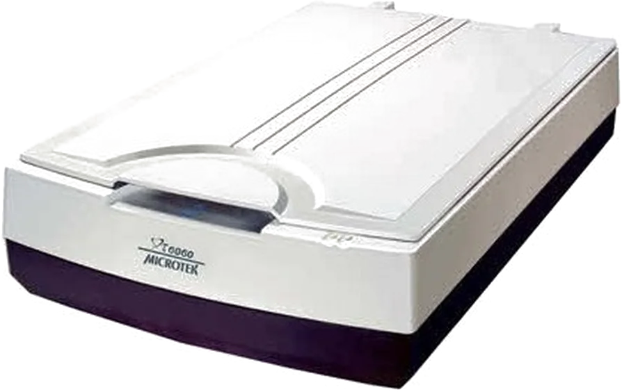
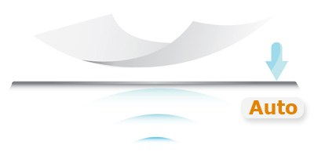
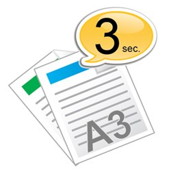
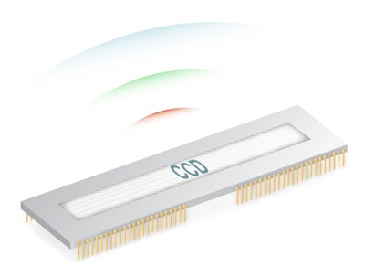

Giữ nguyên toàn bộ bố cục
Bề mặt quét 305 × 431,8 mm tiếp nhận trọn bản vẽ, biểu mẫu, tạp chí mở đôi và tài liệu khổ A3 mà không phải chia nhỏ rồi ghép lại.
Microtek XT6060 · A3 Flatbed
Máy quét phẳng A3 dành cho công việc không thể thu nhỏ. XT6060 số hóa bản vẽ, hồ sơ, ấn phẩm và tài liệu khổ lớn trong dưới 3 giây ở 200 dpi — không nạp giấy, không chờ khởi động.

Không ép khổ. Không chia trang.
Bề mặt quét 305 × 431,8 mm tiếp nhận trọn bản vẽ, biểu mẫu, tạp chí mở đôi và tài liệu khổ A3 mà không phải chia nhỏ rồi ghép lại.
Cảm biến CCD kết hợp độ phân giải quang học 600 dpi phù hợp với bản vẽ kỹ thuật, ảnh, tài liệu có bề mặt không hoàn toàn phẳng và nội dung cần giữ chi tiết.
Auto‑Scan nhận biết khi tài liệu được đặt lên mặt kính và tự kích hoạt quét, giảm thao tác chuột trong các phiên số hóa nhiều bản rời.
Nguồn sáng LED không cần thời gian làm nóng, giúp bắt đầu công việc nhanh và duy trì tốc độ ổn định trong ngày.
Ba năng lực tạo nên khác biệt
XT6060 không cố biến máy quét phẳng thành máy nạp giấy. Thiết bị tối ưu đúng ba điểm quan trọng của quy trình A3: đặt tài liệu, thu hình và xử lý đầu ra.

Chức năng Auto‑Scan độc quyền nhận biết vật liệu trên mặt kính, phù hợp với quy trình quét liên tiếp nhiều bản rời.

Quét màu hoặc thang xám khổ A3 với thời gian dưới 3 giây, rút ngắn đáng kể thời gian chờ giữa các lượt.

Cảm biến CCD hỗ trợ độ sâu trường ảnh và tái tạo màu; nguồn sáng LED cho khả năng khởi động nhanh.
Ứng dụng thực tế
Từ hồ sơ kỹ thuật đến tác phẩm thị giác, khổ A3 và cảm biến CCD giúp lưu giữ cả nội dung lẫn cách nội dung được trình bày.
Quét sơ đồ, bản thiết kế, biểu mẫu và tài liệu hiện trường khổ lớn mà không phải chia trang.
Số hóa phác thảo, artwork, mẫu màu và bản trình bày cần giữ chi tiết.
Lưu giáo trình, chứng từ, bản đồ và tài liệu tham khảo.
Quét tạp chí, dàn trang, ấn phẩm quảng cáo và tài liệu in khổ rộng với bố cục nguyên vẹn.
Một quy trình ít ma sát
Phần mềm Microtek hỗ trợ các bước xử lý tài liệu thường gặp, giúp đầu ra sẵn sàng cho lưu trữ và chia sẻ.
Mặt kính A3+ tiếp nhận bản gốc phản xạ; Auto‑Scan có thể phát hiện tài liệu và bắt đầu quét.
ScanWizard DI hỗ trợ những thao tác như cắt viền, chỉnh nghiêng, xoay hướng và xem trước vùng quét.
Xuất BMP, JPEG, PDF, TIFF hoặc PDF/TIFF nhiều trang để lưu trữ, chuyển giao và xử lý tiếp.
Một số tính năng phần mềm phụ thuộc hệ điều hành, phiên bản trình điều khiển và cấu hình cài đặt thực tế.
Thông số cốt lõi
Thông số được đối chiếu từ trang sản phẩm Microtek XT6060; nhà sản xuất có thể thay đổi cấu hình theo thị trường mà không báo trước.
Sẵn sàng đưa A3 vào quy trình số
HPT Tech tư vấn cấu hình, phần mềm và cách tổ chức luồng quét phù hợp với loại tài liệu, khối lượng công việc và hệ điều hành đang sử dụng.